G.3 CART con el paquete rpart
La metodología CART está implementada en el paquete rpart
(Recursive PARTitioning)14.
La función principal es rpart() y habitualmente se emplea de la forma:
rpart(formula, data, method, parms, control, ...)
formula: permite especificar la respuesta y las variables predictoras de la forma habitual, se suele establecer de la formarespuesta ~ .para incluir todas las posibles variables explicativas.data:data.frame(opcional; donde se evaluará la fórmula) con la muestra de entrenamiento.method: método empleado para realizar las particiones, puede ser"anova"(regresión),"class"(clasificación),"poisson"(regresión de Poisson) o"exp"(supervivencia), o alternativamente una lista de funciones (con componentesinit,split,eval; ver la vignette User Written Split Functions). Por defecto se selecciona a partir de la variable respuesta enformula, por ejemplo si es un factor (lo recomendado en clasificación) empleamethod = "class".parms: lista de parámetros opcionales para la partición en el caso de clasificación (o regresión de Poisson). Puede contener los componentesprior(vector de probabilidades previas; por defecto las frecuencias observadas),loss(matriz de pérdidas; con ceros en la diagonal y por defecto 1 en el resto) ysplit(criterio de error; por defecto"gini"o alternativamente"information").control: lista de opciones que controlan el algoritmo de partición, por defecto se seleccionan mediante la funciónrpart.control, aunque también se pueden establecer en la llamada a la función principal, y los principales parámetros son:rpart.control(minsplit = 20, minbucket = round(minsplit/3), cp = 0.01, xval = 10, maxdepth = 30, ...)cpes el parámetro de complejidad \(\tilde \alpha\) para la poda del árbol, de forma que un valor de 1 se corresponde con un árbol sin divisiones y un valor de 0 con un árbol de profundidad máxima. Adicionalmente, para reducir el tiempo de computación, el algoritmo empleado no realiza una partición si la proporción de reducción del error es inferior a este valor (valores más grandes simplifican el modelo y reducen el tiempo de computación).maxdepthes la profundidad máxima del árbol (la profundidad de la raíz sería 0).minsplityminbucketson, respectivamente, los números mínimos de observaciones en un nodo intermedio para particionarlo y en un nodo terminal.xvales el número de grupos (folds) para validación cruzada.
Para más detalles consultar la documentación de esta función o la vignette Introduction to Rpart.
G.3.1 Ejemplo: regresión
Emplearemos el conjunto de datos winequality.RData (ver Cortez et al., 2009), que contiene información fisico-química
(fixed.acidity, volatile.acidity, citric.acid, residual.sugar, chlorides, free.sulfur.dioxide,
total.sulfur.dioxide, density, pH, sulphates y alcohol) y sensorial (quality)
de una muestra de 1250 vinos portugueses de la variedad Vinho Verde.
Como respuesta consideraremos la variable quality, mediana de al menos 3 evaluaciones de la calidad del vino
realizadas por expertos, que los evaluaron entre 0 (muy malo) y 10 (muy excelente).
load("datos/winequality.RData")
str(winequality)## 'data.frame': 1250 obs. of 12 variables:
## $ fixed.acidity : num 6.8 7.1 6.9 7.5 8.6 7.7 5.4 6.8 6.1 5.5 ...
## $ volatile.acidity : num 0.37 0.24 0.32 0.23 0.36 0.28 0.59 0.16 0.28 0.28 ...
## $ citric.acid : num 0.47 0.34 0.13 0.49 0.26 0.63 0.07 0.36 0.27 0.21 ...
## $ residual.sugar : num 11.2 1.2 7.8 7.7 11.1 11.1 7 1.3 4.7 1.6 ...
## $ chlorides : num 0.071 0.045 0.042 0.049 0.03 0.039 0.045 0.034 0.03 0.032 ...
## $ free.sulfur.dioxide : num 44 6 11 61 43.5 58 36 32 56 23 ...
## $ total.sulfur.dioxide: num 136 132 117 209 171 179 147 98 140 85 ...
## $ density : num 0.997 0.991 0.996 0.994 0.995 ...
## $ pH : num 2.98 3.16 3.23 3.14 3.03 3.08 3.34 3.02 3.16 3.42 ...
## $ sulphates : num 0.88 0.46 0.37 0.3 0.49 0.44 0.57 0.58 0.42 0.42 ...
## $ alcohol : num 9.2 11.2 9.2 11.1 12 8.8 9.7 11.3 12.5 12.5 ...
## $ quality : int 5 4 5 7 5 4 6 6 8 5 ...barplot(table(winequality$quality))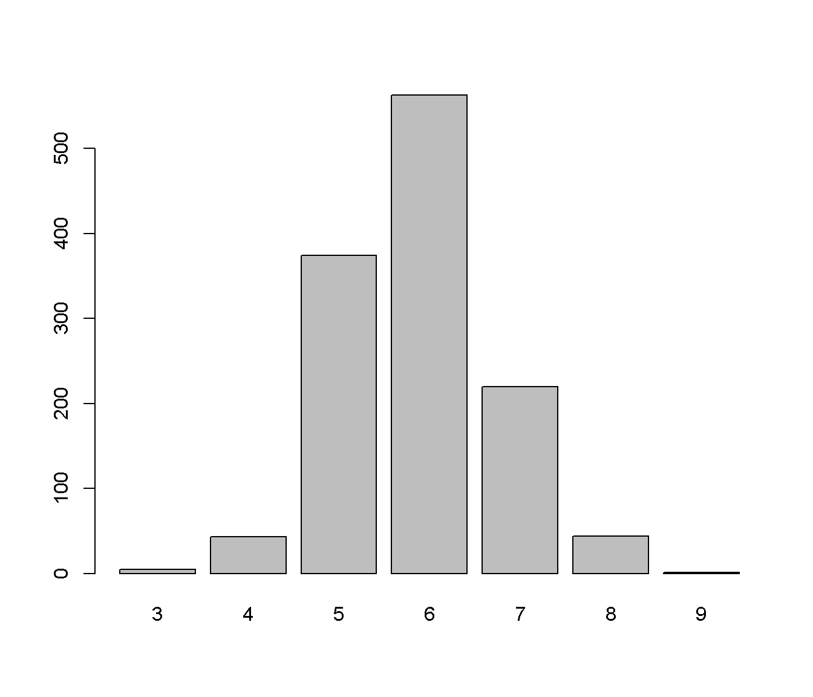
En primer lugar se selecciona el 80% de los datos como muestra de entrenamiento y el 20% restante como muestra de test:
set.seed(1)
nobs <- nrow(winequality)
itrain <- sample(nobs, 0.8 * nobs)
train <- winequality[itrain, ]
test <- winequality[-itrain, ]Podemos obtener el arbol con las opciones por defecto con el comando:
tree <- rpart(quality ~ ., data = train)Al imprimirlo se muestra el número de observaciones e información
sobre los distintos nodos (número de nodo, condición que define la partición,
número de observaciones en el nodo, función de pérdida y predicción),
marcando con un * los nodos terminales.
tree## n= 1000
##
## node), split, n, deviance, yval
## * denotes terminal node
##
## 1) root 1000 768.95600 5.862000
## 2) alcohol< 10.75 622 340.81190 5.586817
## 4) volatile.acidity>=0.2575 329 154.75990 5.370821
## 8) total.sulfur.dioxide< 98.5 24 12.50000 4.750000 *
## 9) total.sulfur.dioxide>=98.5 305 132.28200 5.419672
## 18) pH< 3.315 269 101.44980 5.353160 *
## 19) pH>=3.315 36 20.75000 5.916667 *
## 5) volatile.acidity< 0.2575 293 153.46760 5.829352
## 10) sulphates< 0.475 144 80.32639 5.659722 *
## 11) sulphates>=0.475 149 64.99329 5.993289 *
## 3) alcohol>=10.75 378 303.53700 6.314815
## 6) alcohol< 11.775 200 173.87500 6.075000
## 12) free.sulfur.dioxide< 11.5 15 10.93333 4.933333 *
## 13) free.sulfur.dioxide>=11.5 185 141.80540 6.167568
## 26) volatile.acidity>=0.395 7 12.85714 5.142857 *
## 27) volatile.acidity< 0.395 178 121.30900 6.207865
## 54) citric.acid>=0.385 31 21.93548 5.741935 *
## 55) citric.acid< 0.385 147 91.22449 6.306122 *
## 7) alcohol>=11.775 178 105.23600 6.584270 *Para representarlo se puede emplear las herramientas del paquete rpart:
plot(tree)
text(tree)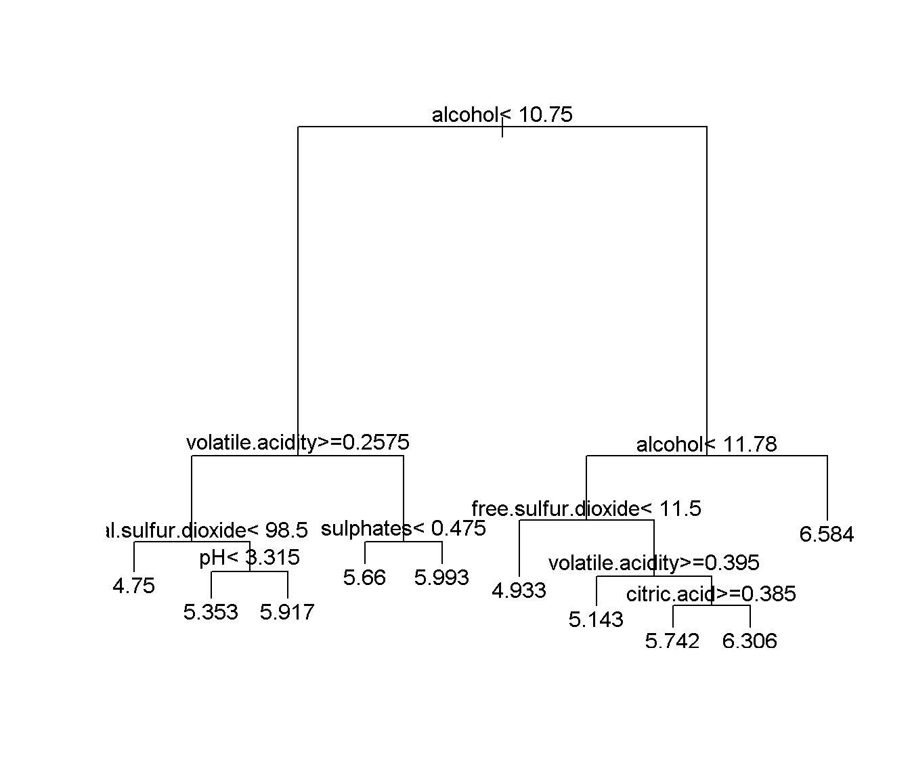
Pero puede ser preferible emplear el paquete rpart.plot
library(rpart.plot)
rpart.plot(tree, main="Regresion tree winequality") 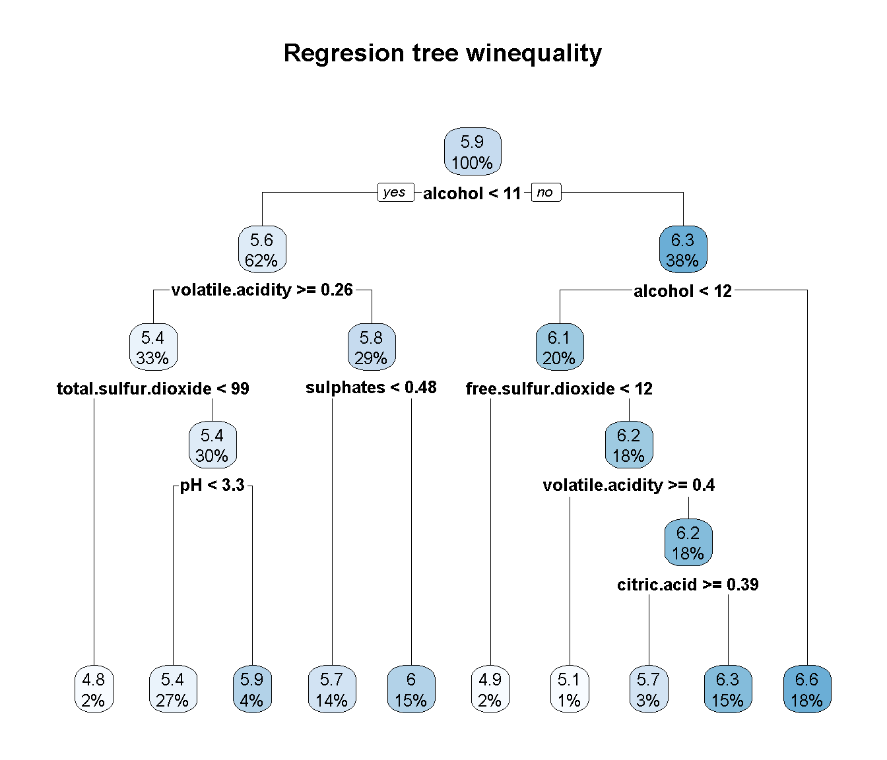
Nos interesa como se clasificaría a una nueva observación en los nodos terminales (en los nodos intermedios solo nos interesarían las condiciones, y el orden de las variables consideradas, hasta llegar a las hojas) y las correspondientes predicciones (la media de la respuesta en el correspondiente nodo terminal). Para ello, puede ser de utilidad imprimir las reglas:
rpart.rules(tree, style = "tall")## quality is 4.8 when
## alcohol < 11
## volatile.acidity >= 0.26
## total.sulfur.dioxide < 99
##
## quality is 4.9 when
## alcohol is 11 to 12
## free.sulfur.dioxide < 12
##
## quality is 5.1 when
## alcohol is 11 to 12
## volatile.acidity >= 0.40
## free.sulfur.dioxide >= 12
##
## quality is 5.4 when
## alcohol < 11
## volatile.acidity >= 0.26
## total.sulfur.dioxide >= 99
## pH < 3.3
##
## quality is 5.7 when
## alcohol < 11
## volatile.acidity < 0.26
## sulphates < 0.48
##
## quality is 5.7 when
## alcohol is 11 to 12
## volatile.acidity < 0.40
## free.sulfur.dioxide >= 12
## citric.acid >= 0.39
##
## quality is 5.9 when
## alcohol < 11
## volatile.acidity >= 0.26
## total.sulfur.dioxide >= 99
## pH >= 3.3
##
## quality is 6.0 when
## alcohol < 11
## volatile.acidity < 0.26
## sulphates >= 0.48
##
## quality is 6.3 when
## alcohol is 11 to 12
## volatile.acidity < 0.40
## free.sulfur.dioxide >= 12
## citric.acid < 0.39
##
## quality is 6.6 when
## alcohol >= 12Por defecto se poda el arbol considerando cp = 0.01, que puede ser adecuado en muchos casos.
Sin embargo, para seleccionar el valor óptimo de este (hiper)parámetro se puede emplear validación cruzada.
En primer lugar habría que establecer cp = 0 para construir el árbol completo, a la profundidad máxima
(determinada por los valores de minsplit y minbucket, que se podrían seleccionar
“a mano” dependiendo del número de observaciones o también considerándolos como hiperparámetos; esto último no está implementado en rpart, ni en principio en caret)15.
tree <- rpart(quality ~ ., data = train, cp = 0)Posteriormente podemos emplear las funciones printcp() (o plotcp()) para obtener (representar)
los valores de CP para los árboles (óptimos) de menor tamaño junto con su error de validación cruzada
xerror (reescalado de forma que el máximo de rel error es 1)16:
printcp(tree)##
## Regression tree:
## rpart(formula = quality ~ ., data = train, cp = 0)
##
## Variables actually used in tree construction:
## [1] alcohol chlorides citric.acid
## [4] density fixed.acidity free.sulfur.dioxide
## [7] pH residual.sugar sulphates
## [10] total.sulfur.dioxide volatile.acidity
##
## Root node error: 768.96/1000 = 0.76896
##
## n= 1000
##
## CP nsplit rel error xerror xstd
## 1 0.16204707 0 1.00000 1.00203 0.048591
## 2 0.04237491 1 0.83795 0.85779 0.043646
## 3 0.03176525 2 0.79558 0.82810 0.043486
## 4 0.02748696 3 0.76381 0.81350 0.042814
## 5 0.01304370 4 0.73633 0.77038 0.039654
## 6 0.01059605 6 0.71024 0.78168 0.039353
## 7 0.01026605 7 0.69964 0.78177 0.039141
## 8 0.00840800 9 0.67911 0.78172 0.039123
## 9 0.00813924 10 0.67070 0.80117 0.039915
## 10 0.00780567 11 0.66256 0.80020 0.040481
## 11 0.00684175 13 0.64695 0.79767 0.040219
## 12 0.00673843 15 0.63327 0.81381 0.040851
## 13 0.00643577 18 0.61305 0.82059 0.041240
## 14 0.00641137 19 0.60662 0.82323 0.041271
## 15 0.00549694 21 0.59379 0.84187 0.042714
## 16 0.00489406 23 0.58280 0.84748 0.042744
## 17 0.00483045 24 0.57791 0.85910 0.043897
## 18 0.00473741 25 0.57308 0.86553 0.045463
## 19 0.00468372 26 0.56834 0.86455 0.045413
## 20 0.00450496 28 0.55897 0.87049 0.045777
## 21 0.00448365 32 0.54095 0.87263 0.045824
## 22 0.00437484 33 0.53647 0.87260 0.045846
## 23 0.00435280 35 0.52772 0.87772 0.046022
## 24 0.00428623 36 0.52337 0.87999 0.046124
## 25 0.00412515 37 0.51908 0.88151 0.046505
## 26 0.00390866 39 0.51083 0.89242 0.047068
## 27 0.00375301 42 0.49910 0.90128 0.047319
## 28 0.00370055 43 0.49535 0.90965 0.047991
## 29 0.00351987 45 0.48795 0.91404 0.048079
## 30 0.00308860 47 0.48091 0.92132 0.048336
## 31 0.00305781 49 0.47473 0.93168 0.049699
## 32 0.00299018 51 0.46862 0.93258 0.049701
## 33 0.00295148 52 0.46563 0.93062 0.049644
## 34 0.00286138 54 0.45972 0.93786 0.050366
## 35 0.00283972 55 0.45686 0.93474 0.050404
## 36 0.00274809 56 0.45402 0.93307 0.050390
## 37 0.00273457 58 0.44853 0.93642 0.050406
## 38 0.00260607 59 0.44579 0.93726 0.050543
## 39 0.00252978 60 0.44318 0.93692 0.050323
## 40 0.00252428 62 0.43813 0.93778 0.050381
## 41 0.00250804 64 0.43308 0.93778 0.050381
## 42 0.00232226 65 0.43057 0.93642 0.050081
## 43 0.00227625 66 0.42825 0.93915 0.050166
## 44 0.00225146 67 0.42597 0.94101 0.050195
## 45 0.00224774 68 0.42372 0.94101 0.050195
## 46 0.00216406 69 0.42147 0.94067 0.050124
## 47 0.00204851 70 0.41931 0.94263 0.050366
## 48 0.00194517 72 0.41521 0.94203 0.050360
## 49 0.00188139 73 0.41326 0.93521 0.050349
## 50 0.00154129 75 0.40950 0.93500 0.050277
## 51 0.00143642 76 0.40796 0.93396 0.050329
## 52 0.00118294 77 0.40652 0.93289 0.050325
## 53 0.00117607 78 0.40534 0.93738 0.050406
## 54 0.00108561 79 0.40417 0.93738 0.050406
## 55 0.00097821 80 0.40308 0.93670 0.050406
## 56 0.00093107 81 0.40210 0.93752 0.050589
## 57 0.00090075 82 0.40117 0.93752 0.050589
## 58 0.00082968 83 0.40027 0.93634 0.050561
## 59 0.00048303 85 0.39861 0.93670 0.050557
## 60 0.00000000 86 0.39813 0.93745 0.050558plotcp(tree)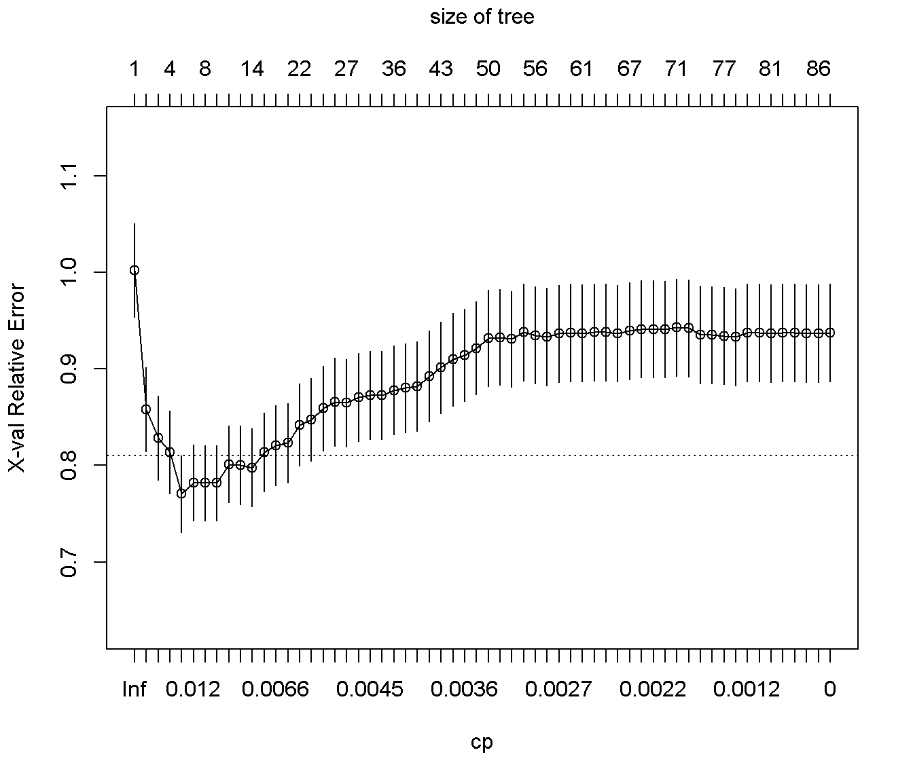
La tabla con los valores de las podas (óptimas, dependiendo del parámetro de complejidad)
está almacenada en la componente $cptable:
head(tree$cptable, 10)## CP nsplit rel error xerror xstd
## 1 0.162047069 0 1.0000000 1.0020304 0.04859127
## 2 0.042374911 1 0.8379529 0.8577876 0.04364585
## 3 0.031765253 2 0.7955780 0.8281010 0.04348571
## 4 0.027486958 3 0.7638128 0.8134957 0.04281430
## 5 0.013043701 4 0.7363258 0.7703804 0.03965433
## 6 0.010596054 6 0.7102384 0.7816774 0.03935308
## 7 0.010266055 7 0.6996424 0.7817716 0.03914071
## 8 0.008408003 9 0.6791102 0.7817177 0.03912344
## 9 0.008139238 10 0.6707022 0.8011719 0.03991498
## 10 0.007805674 11 0.6625630 0.8001996 0.04048088A partir de la que podríamos seleccionar el valor óptimo de forma automática, siguiendo el criterio de un error estándar de Breiman et al. (1984):
xerror <- tree$cptable[,"xerror"]
imin.xerror <- which.min(xerror)
# Valor óptimo
tree$cptable[imin.xerror, ]## CP nsplit rel error xerror xstd
## 0.01304370 4.00000000 0.73632581 0.77038039 0.03965433# Límite superior "oneSE rule" y complejidad mínima por debajo de ese valor
upper.xerror <- xerror[imin.xerror] + tree$cptable[imin.xerror, "xstd"]
icp <- min(which(xerror <= upper.xerror))
cp <- tree$cptable[icp, "CP"]Para obtener el modelo final podamos el arbol con el valor de complejidad obtenido 0.0130437 (que en este caso coincide con el valor óptimo):
tree <- prune(tree, cp = cp)
rpart.plot(tree, main="Regresion tree winequality") 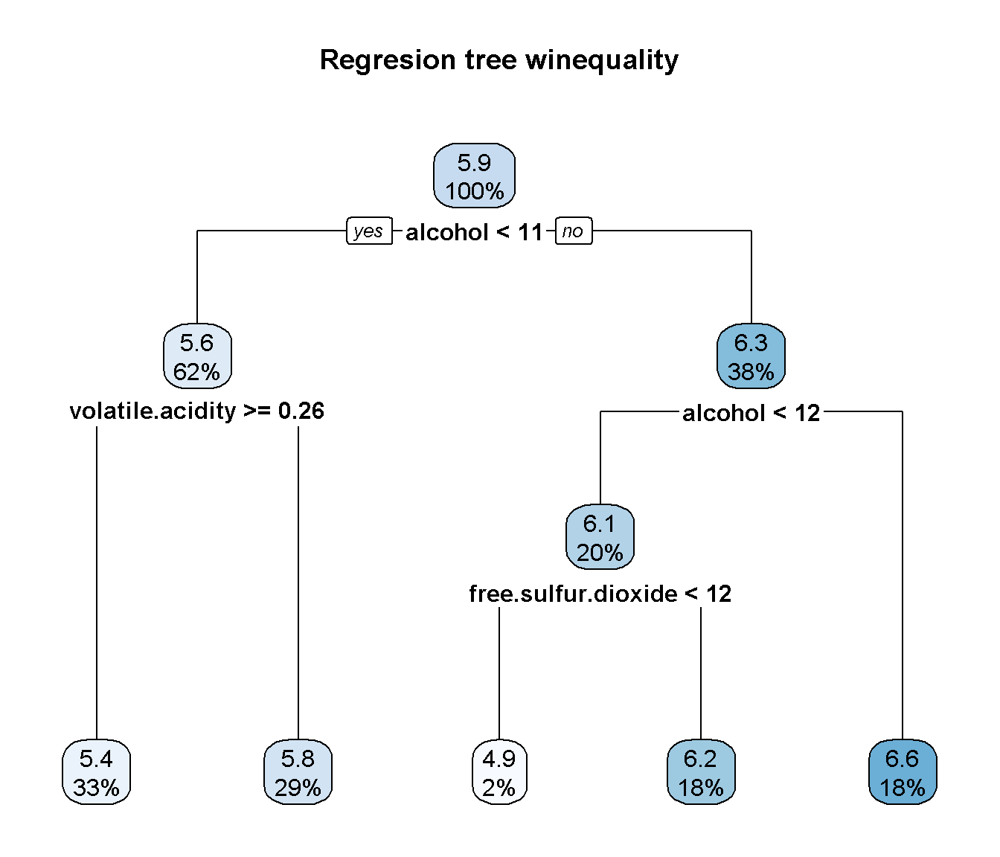
Podríamos estudiar el modelo final, por ejemplo mediante el método summary(), que entre otras cosas muestra una medida (en porcentaje) de la importancia de las variables explicativas para la predicción de la respuesta (teniendo en cuenta todas las particiones, principales y secundarias, en las que se emplea cada variable explicativa).
Alternativamente podríamos emplear el siguiente código:
# summary(tree)
importance <- tree$variable.importance # Equivalente a caret::varImp(tree)
importance <- round(100*importance/sum(importance), 1)
importance[importance >= 1]## alcohol density chlorides
## 36.1 21.7 11.3
## volatile.acidity total.sulfur.dioxide free.sulfur.dioxide
## 8.7 8.5 5.0
## residual.sugar sulphates citric.acid
## 4.0 1.9 1.1
## pH
## 1.1El último paso sería evaluarlo en la muestra de test siguiendo los pasos descritos en la Sección F.3.4:
obs <- test$quality
pred <- predict(tree, newdata = test)
# plot(pred, obs, main = "Observado frente a predicciones (quality)",
# xlab = "Predicción", ylab = "Observado")
plot(jitter(pred), jitter(obs), main = "Observado frente a predicciones (quality)",
xlab = "Predicción", ylab = "Observado")
abline(a = 0, b = 1)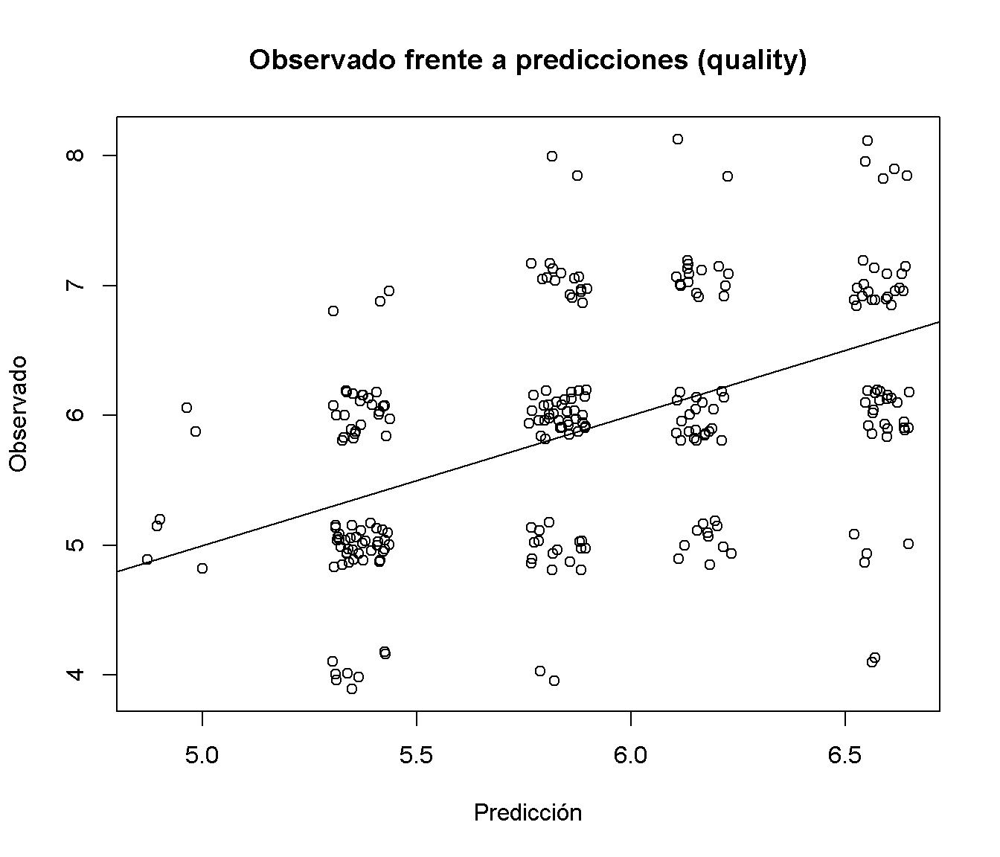
# Empleando el paquete caret
caret::postResample(pred, obs)## RMSE Rsquared MAE
## 0.8145614 0.1969485 0.6574264# Con la función accuracy()
accuracy <- function(pred, obs, na.rm = FALSE,
tol = sqrt(.Machine$double.eps)) {
err <- obs - pred # Errores
if(na.rm) {
is.a <- !is.na(err)
err <- err[is.a]
obs <- obs[is.a]
}
perr <- 100*err/pmax(obs, tol) # Errores porcentuales
return(c(
me = mean(err), # Error medio
rmse = sqrt(mean(err^2)), # Raíz del error cuadrático medio
mae = mean(abs(err)), # Error absoluto medio
mpe = mean(perr), # Error porcentual medio
mape = mean(abs(perr)), # Error porcentual absoluto medio
r.squared = 1 - sum(err^2)/sum((obs - mean(obs))^2)
))
}
accuracy(pred, test$quality)## me rmse mae mpe mape r.squared
## -0.001269398 0.814561435 0.657426365 -1.952342173 11.576716037 0.192007721G.3.2 Ejemplo: modelo de clasificación
Para ilustrar los árboles de clasificación CART, podemos emplear los datos anteriores de calidad de vino, considerando como respuesta una nueva variable taste que clasifica los vinos en “good” o “bad” dependiendo de si winequality$quality >= 5 (este conjunto de datos está almacenado en el archivo winetaste.RData).
# load("datos/winetaste.RData")
winetaste <- winequality[, colnames(winequality)!="quality"]
winetaste$taste <- factor(winequality$quality < 6, labels = c('good', 'bad')) # levels = c('FALSE', 'TRUE')
str(winetaste)## 'data.frame': 1250 obs. of 12 variables:
## $ fixed.acidity : num 6.8 7.1 6.9 7.5 8.6 7.7 5.4 6.8 6.1 5.5 ...
## $ volatile.acidity : num 0.37 0.24 0.32 0.23 0.36 0.28 0.59 0.16 0.28 0.28 ...
## $ citric.acid : num 0.47 0.34 0.13 0.49 0.26 0.63 0.07 0.36 0.27 0.21 ...
## $ residual.sugar : num 11.2 1.2 7.8 7.7 11.1 11.1 7 1.3 4.7 1.6 ...
## $ chlorides : num 0.071 0.045 0.042 0.049 0.03 0.039 0.045 0.034 0.03 0.032 ...
## $ free.sulfur.dioxide : num 44 6 11 61 43.5 58 36 32 56 23 ...
## $ total.sulfur.dioxide: num 136 132 117 209 171 179 147 98 140 85 ...
## $ density : num 0.997 0.991 0.996 0.994 0.995 ...
## $ pH : num 2.98 3.16 3.23 3.14 3.03 3.08 3.34 3.02 3.16 3.42 ...
## $ sulphates : num 0.88 0.46 0.37 0.3 0.49 0.44 0.57 0.58 0.42 0.42 ...
## $ alcohol : num 9.2 11.2 9.2 11.1 12 8.8 9.7 11.3 12.5 12.5 ...
## $ taste : Factor w/ 2 levels "good","bad": 2 2 2 1 2 2 1 1 1 2 ...table(winetaste$taste)##
## good bad
## 828 422Como en el caso anterior, se contruyen las muestras de entrenamiento (80%) y de test (20%):
# set.seed(1)
# nobs <- nrow(winetaste)
# itrain <- sample(nobs, 0.8 * nobs)
train <- winetaste[itrain, ]
test <- winetaste[-itrain, ]Al igual que en el caso anterior podemos obtener el árbol de clasificación con las opciones por defecto (cp = 0.01 y split = "gini") con el comando:
tree <- rpart(taste ~ ., data = train)En este caso al imprimirlo como información de los nodos se muestra (además del número de nodo, la condición de la partición y el número de observaciones en el nodo) el número de observaciones mal clasificadas, la predicción y las proporciones estimadas (frecuencias relativas en la muestra de entrenamiento) de las clases:
tree## n= 1000
##
## node), split, n, loss, yval, (yprob)
## * denotes terminal node
##
## 1) root 1000 338 good (0.6620000 0.3380000)
## 2) alcohol>=10.11667 541 100 good (0.8151571 0.1848429)
## 4) free.sulfur.dioxide>=8.5 522 87 good (0.8333333 0.1666667)
## 8) fixed.acidity< 8.55 500 73 good (0.8540000 0.1460000) *
## 9) fixed.acidity>=8.55 22 8 bad (0.3636364 0.6363636) *
## 5) free.sulfur.dioxide< 8.5 19 6 bad (0.3157895 0.6842105) *
## 3) alcohol< 10.11667 459 221 bad (0.4814815 0.5185185)
## 6) volatile.acidity< 0.2875 264 102 good (0.6136364 0.3863636)
## 12) fixed.acidity< 7.45 213 71 good (0.6666667 0.3333333)
## 24) citric.acid>=0.265 160 42 good (0.7375000 0.2625000) *
## 25) citric.acid< 0.265 53 24 bad (0.4528302 0.5471698)
## 50) free.sulfur.dioxide< 42.5 33 13 good (0.6060606 0.3939394) *
## 51) free.sulfur.dioxide>=42.5 20 4 bad (0.2000000 0.8000000) *
## 13) fixed.acidity>=7.45 51 20 bad (0.3921569 0.6078431)
## 26) total.sulfur.dioxide>=150 26 10 good (0.6153846 0.3846154) *
## 27) total.sulfur.dioxide< 150 25 4 bad (0.1600000 0.8400000) *
## 7) volatile.acidity>=0.2875 195 59 bad (0.3025641 0.6974359)
## 14) pH>=3.235 49 24 bad (0.4897959 0.5102041)
## 28) chlorides< 0.0465 18 4 good (0.7777778 0.2222222) *
## 29) chlorides>=0.0465 31 10 bad (0.3225806 0.6774194) *
## 15) pH< 3.235 146 35 bad (0.2397260 0.7602740) *También puede ser preferible emplear el paquete rpart.plot para representarlo:
library(rpart.plot)
rpart.plot(tree, main="Classification tree winetaste") # Alternativa: rattle::fancyRpartPlot
rpart.plot(tree, main="Classification tree winetaste",
extra = 104, # show fitted class, probs, percentages
box.palette = "GnBu", # color scheme
branch.lty = 3, # dotted branch lines
shadow.col = "gray", # shadows under the node boxes
nn = TRUE) # display the node numbers 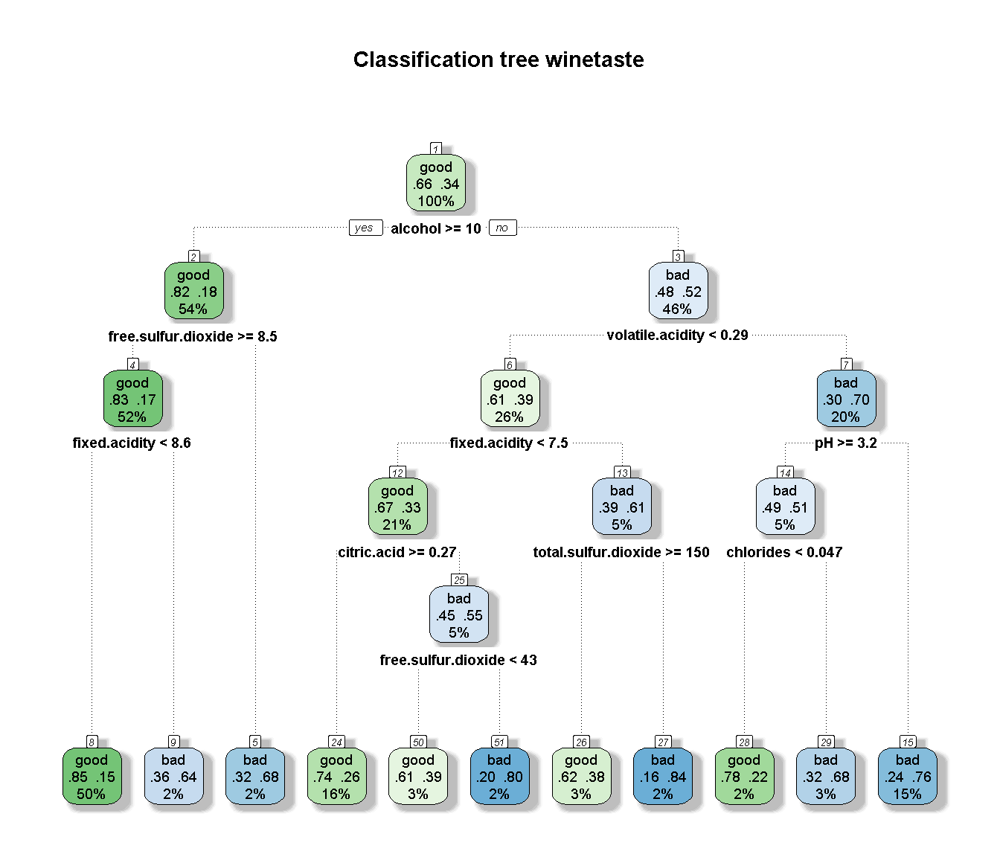
Nos interesa como se clasificaría a una nueva observación (como se llega a los nodos terminales) y su probabilidad estimada (la frecuencia relativa de la clase más frecuente en el correspondiente nodo terminal). Al igual que en el caso de regresión, puede ser de utilidad imprimir las reglas:
rpart.rules(tree, style = "tall")## taste is 0.15 when
## alcohol >= 10
## fixed.acidity < 8.6
## free.sulfur.dioxide >= 8.5
##
## taste is 0.22 when
## alcohol < 10
## volatile.acidity >= 0.29
## pH >= 3.2
## chlorides < 0.047
##
## taste is 0.26 when
## alcohol < 10
## volatile.acidity < 0.29
## fixed.acidity < 7.5
## citric.acid >= 0.27
##
## taste is 0.38 when
## alcohol < 10
## volatile.acidity < 0.29
## fixed.acidity >= 7.5
## total.sulfur.dioxide >= 150
##
## taste is 0.39 when
## alcohol < 10
## volatile.acidity < 0.29
## fixed.acidity < 7.5
## free.sulfur.dioxide < 42.5
## citric.acid < 0.27
##
## taste is 0.64 when
## alcohol >= 10
## fixed.acidity >= 8.6
## free.sulfur.dioxide >= 8.5
##
## taste is 0.68 when
## alcohol < 10
## volatile.acidity >= 0.29
## pH >= 3.2
## chlorides >= 0.047
##
## taste is 0.68 when
## alcohol >= 10
## free.sulfur.dioxide < 8.5
##
## taste is 0.76 when
## alcohol < 10
## volatile.acidity >= 0.29
## pH < 3.2
##
## taste is 0.80 when
## alcohol < 10
## volatile.acidity < 0.29
## fixed.acidity < 7.5
## free.sulfur.dioxide >= 42.5
## citric.acid < 0.27
##
## taste is 0.84 when
## alcohol < 10
## volatile.acidity < 0.29
## fixed.acidity >= 7.5
## total.sulfur.dioxide < 150Al igual que en el caso anterior, para seleccionar un valor óptimo del (hiper)parámetro de complejidad, se puede construir un árbol de decisión completo y emplear validación cruzada para podarlo. Además, si el número de observaciones es grande y las clases están más o menos balanceadas, se podría aumentar los valores mínimos de observaciones en los nodos intermedios y terminales17, por ejemplo:
tree <- rpart(taste ~ ., data = train, cp = 0, minsplit = 30, minbucket = 10)En este caso mantenemos el resto de valores por defecto:
tree <- rpart(taste ~ ., data = train, cp = 0)Representamos los errores (reescalados) de validación cruzada:
# printcp(tree)
plotcp(tree)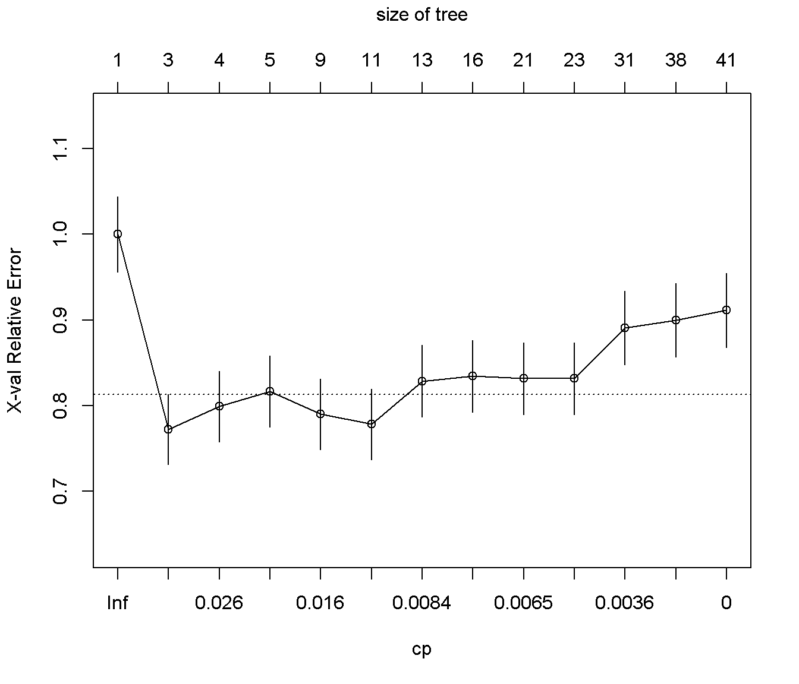
Para obtener el modelo final, seleccionamos el valor óptimo de complejidad siguiendo el criterio de un error estándar de Breiman et al. (1984) y podamos el arbol:
xerror <- tree$cptable[,"xerror"]
imin.xerror <- which.min(xerror)
upper.xerror <- xerror[imin.xerror] + tree$cptable[imin.xerror, "xstd"]
icp <- min(which(xerror <= upper.xerror))
cp <- tree$cptable[icp, "CP"]
tree <- prune(tree, cp = cp)
# tree
# summary(tree)
# caret::varImp(tree)
# importance <- tree$variable.importance
# importance <- round(100*importance/sum(importance), 1)
# importance[importance >= 1]
rpart.plot(tree, main="Classification tree winetaste")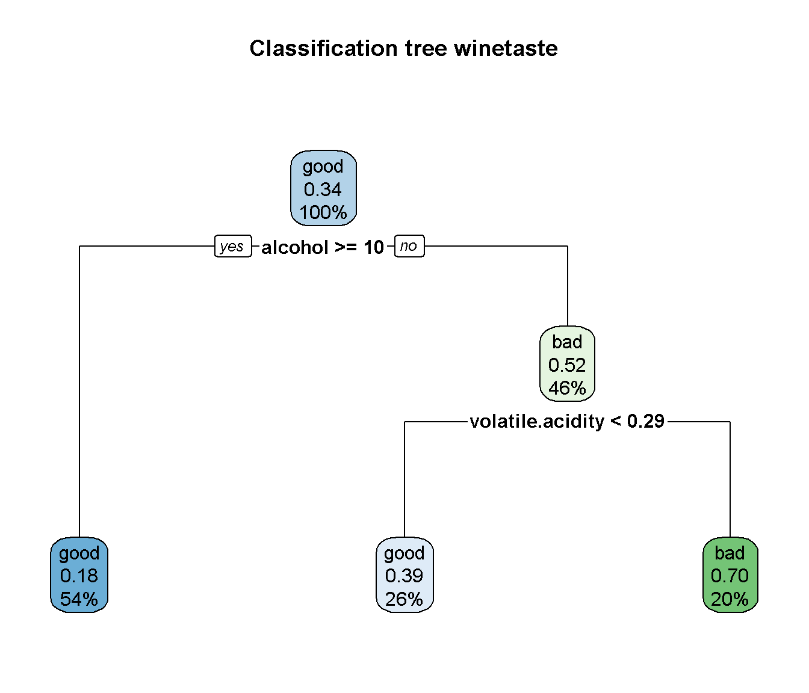
El último paso sería evaluarlo en la muestra de test siguiendo los pasos descritos en la Sección F.3.5.
El método predict() por defecto (type = "prob") devuelve una matriz con las probabilidades de cada clase, habrá que establecer type = "class" (para más detalles consultar la ayuda de predic.rpart()).
obs <- test$taste
head(predict(tree, newdata = test))## good bad
## 1 0.3025641 0.6974359
## 4 0.8151571 0.1848429
## 9 0.8151571 0.1848429
## 10 0.8151571 0.1848429
## 12 0.8151571 0.1848429
## 16 0.8151571 0.1848429pred <- predict(tree, newdata = test, type = "class")
table(obs, pred)## pred
## obs good bad
## good 153 13
## bad 54 30caret::confusionMatrix(pred, obs)## Confusion Matrix and Statistics
##
## Reference
## Prediction good bad
## good 153 54
## bad 13 30
##
## Accuracy : 0.732
## 95% CI : (0.6725, 0.7859)
## No Information Rate : 0.664
## P-Value [Acc > NIR] : 0.01247
##
## Kappa : 0.3171
##
## Mcnemar's Test P-Value : 1.025e-06
##
## Sensitivity : 0.9217
## Specificity : 0.3571
## Pos Pred Value : 0.7391
## Neg Pred Value : 0.6977
## Prevalence : 0.6640
## Detection Rate : 0.6120
## Detection Prevalence : 0.8280
## Balanced Accuracy : 0.6394
##
## 'Positive' Class : good
## G.3.3 Interfaz de caret
En caret podemos ajustar un árbol CART seleccionando method = "rpart".
Por defecto emplea bootstrap de las observaciones para seleccionar el valor óptimo del hiperparámetro cp (considerando únicamente tres posibles valores).
Si queremos emplear validación cruzada como en el caso anterior podemos emplear la función auxiliar trainControl() y para considerar un mayor rango de posibles valores, el argumento tuneLength.
library(caret)
# names(getModelInfo()) # Listado de todos los métodos disponibles
# modelLookup("rpart") # Información sobre hiperparámetros
set.seed(1)
# itrain <- <- createDataPartition(winetaste$taste, p = 0.8, list = FALSE)
# train <- winetaste[itrain, ]
# test <- winetaste[-itrain, ]
caret.rpart <- train(taste ~ ., method = "rpart", data = train,
tuneLength = 20,
trControl = trainControl(method = "cv", number = 10))
caret.rpart## CART
##
## 1000 samples
## 11 predictor
## 2 classes: 'good', 'bad'
##
## No pre-processing
## Resampling: Cross-Validated (10 fold)
## Summary of sample sizes: 901, 900, 900, 900, 900, 900, ...
## Resampling results across tuning parameters:
##
## cp Accuracy Kappa
## 0.000000000 0.7018843 0.3487338
## 0.005995017 0.7330356 0.3870552
## 0.011990034 0.7410655 0.3878517
## 0.017985051 0.7230748 0.3374518
## 0.023980069 0.7360748 0.3698691
## 0.029975086 0.7340748 0.3506377
## 0.035970103 0.7320748 0.3418235
## 0.041965120 0.7350849 0.3422651
## 0.047960137 0.7350849 0.3422651
## 0.053955154 0.7350849 0.3422651
## 0.059950171 0.7350849 0.3422651
## 0.065945188 0.7350849 0.3422651
## 0.071940206 0.7350849 0.3422651
## 0.077935223 0.7350849 0.3422651
## 0.083930240 0.7350849 0.3422651
## 0.089925257 0.7350849 0.3422651
## 0.095920274 0.7350849 0.3422651
## 0.101915291 0.7350849 0.3422651
## 0.107910308 0.7229637 0.2943312
## 0.113905325 0.6809637 0.1087694
##
## Accuracy was used to select the optimal model using the largest value.
## The final value used for the model was cp = 0.01199003.ggplot(caret.rpart)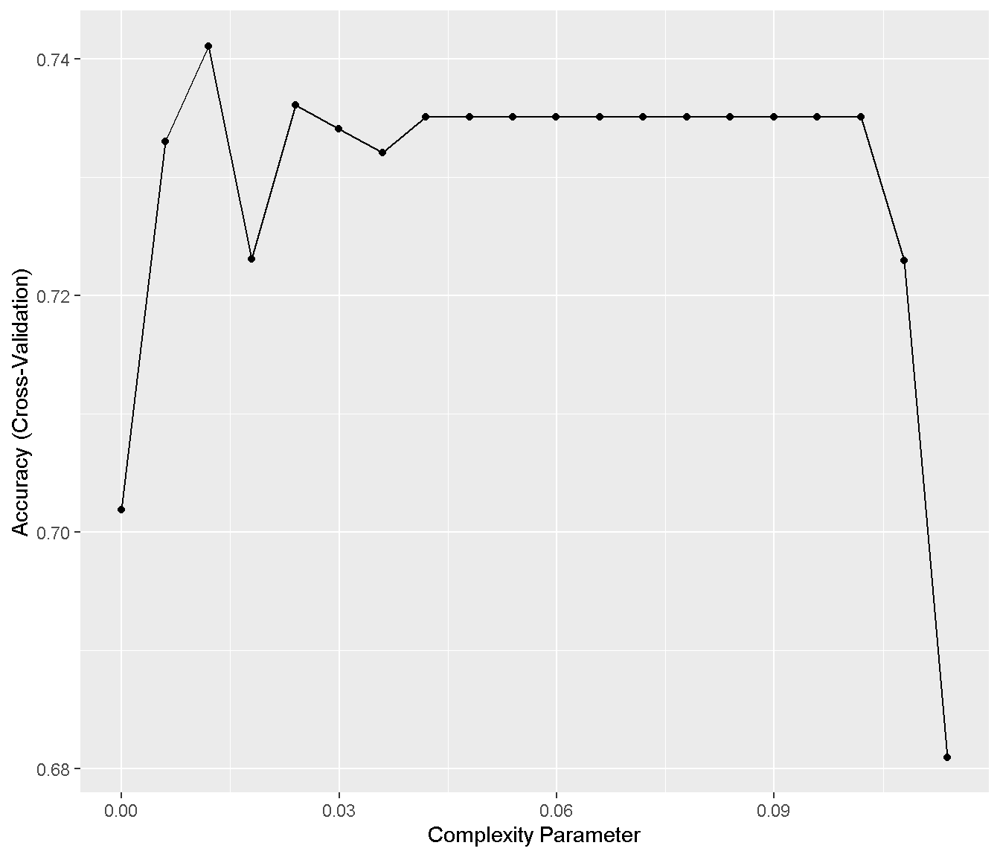
caret.rpart$finalModel## n= 1000
##
## node), split, n, loss, yval, (yprob)
## * denotes terminal node
##
## 1) root 1000 338 good (0.6620000 0.3380000)
## 2) alcohol>=10.11667 541 100 good (0.8151571 0.1848429)
## 4) free.sulfur.dioxide>=8.5 522 87 good (0.8333333 0.1666667)
## 8) fixed.acidity< 8.55 500 73 good (0.8540000 0.1460000) *
## 9) fixed.acidity>=8.55 22 8 bad (0.3636364 0.6363636) *
## 5) free.sulfur.dioxide< 8.5 19 6 bad (0.3157895 0.6842105) *
## 3) alcohol< 10.11667 459 221 bad (0.4814815 0.5185185)
## 6) volatile.acidity< 0.2875 264 102 good (0.6136364 0.3863636)
## 12) fixed.acidity< 7.45 213 71 good (0.6666667 0.3333333)
## 24) citric.acid>=0.265 160 42 good (0.7375000 0.2625000) *
## 25) citric.acid< 0.265 53 24 bad (0.4528302 0.5471698)
## 50) free.sulfur.dioxide< 42.5 33 13 good (0.6060606 0.3939394) *
## 51) free.sulfur.dioxide>=42.5 20 4 bad (0.2000000 0.8000000) *
## 13) fixed.acidity>=7.45 51 20 bad (0.3921569 0.6078431)
## 26) total.sulfur.dioxide>=150 26 10 good (0.6153846 0.3846154) *
## 27) total.sulfur.dioxide< 150 25 4 bad (0.1600000 0.8400000) *
## 7) volatile.acidity>=0.2875 195 59 bad (0.3025641 0.6974359)
## 14) pH>=3.235 49 24 bad (0.4897959 0.5102041)
## 28) chlorides< 0.0465 18 4 good (0.7777778 0.2222222) *
## 29) chlorides>=0.0465 31 10 bad (0.3225806 0.6774194) *
## 15) pH< 3.235 146 35 bad (0.2397260 0.7602740) *rpart.plot(caret.rpart$finalModel, main="Classification tree winetaste")
Para utilizar la regla de “un error estándar” se puede añadir selectionFunction = "oneSE"
set.seed(1)
caret.rpart <- train(taste ~ ., method = "rpart", data = train,
tuneLength = 20,
trControl = trainControl(method = "cv", number = 10,
selectionFunction = "oneSE"))
caret.rpart## CART
##
## 1000 samples
## 11 predictor
## 2 classes: 'good', 'bad'
##
## No pre-processing
## Resampling: Cross-Validated (10 fold)
## Summary of sample sizes: 901, 900, 900, 900, 900, 900, ...
## Resampling results across tuning parameters:
##
## cp Accuracy Kappa
## 0.000000000 0.7018843 0.3487338
## 0.005995017 0.7330356 0.3870552
## 0.011990034 0.7410655 0.3878517
## 0.017985051 0.7230748 0.3374518
## 0.023980069 0.7360748 0.3698691
## 0.029975086 0.7340748 0.3506377
## 0.035970103 0.7320748 0.3418235
## 0.041965120 0.7350849 0.3422651
## 0.047960137 0.7350849 0.3422651
## 0.053955154 0.7350849 0.3422651
## 0.059950171 0.7350849 0.3422651
## 0.065945188 0.7350849 0.3422651
## 0.071940206 0.7350849 0.3422651
## 0.077935223 0.7350849 0.3422651
## 0.083930240 0.7350849 0.3422651
## 0.089925257 0.7350849 0.3422651
## 0.095920274 0.7350849 0.3422651
## 0.101915291 0.7350849 0.3422651
## 0.107910308 0.7229637 0.2943312
## 0.113905325 0.6809637 0.1087694
##
## Accuracy was used to select the optimal model using the one SE rule.
## The final value used for the model was cp = 0.1019153.# ggplot(caret.rpart)
caret.rpart$finalModel## n= 1000
##
## node), split, n, loss, yval, (yprob)
## * denotes terminal node
##
## 1) root 1000 338 good (0.6620000 0.3380000)
## 2) alcohol>=10.11667 541 100 good (0.8151571 0.1848429) *
## 3) alcohol< 10.11667 459 221 bad (0.4814815 0.5185185)
## 6) volatile.acidity< 0.2875 264 102 good (0.6136364 0.3863636) *
## 7) volatile.acidity>=0.2875 195 59 bad (0.3025641 0.6974359) *rpart.plot(caret.rpart$finalModel, main = "Classification tree winetaste")
var.imp <- varImp(caret.rpart)
plot(var.imp)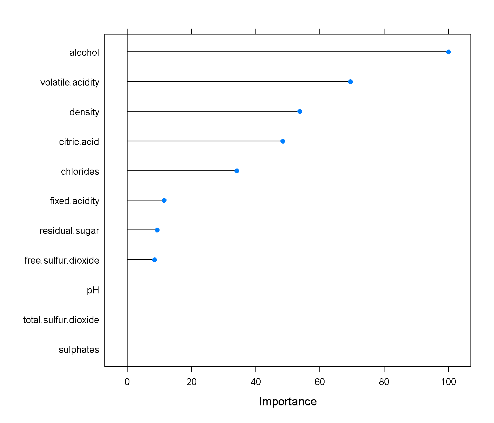
Para calcular las predicciones (o las estimaciones de las probabilidades) podemos emplear el método predict.train() y posteriormente confusionMatrix() para evaluar su precisión:
pred <- predict(caret.rpart, newdata = test)
# p.est <- predict(caret.rpart, newdata = test, type = "prob")
confusionMatrix(pred, test$taste)## Confusion Matrix and Statistics
##
## Reference
## Prediction good bad
## good 153 54
## bad 13 30
##
## Accuracy : 0.732
## 95% CI : (0.6725, 0.7859)
## No Information Rate : 0.664
## P-Value [Acc > NIR] : 0.01247
##
## Kappa : 0.3171
##
## Mcnemar's Test P-Value : 1.025e-06
##
## Sensitivity : 0.9217
## Specificity : 0.3571
## Pos Pred Value : 0.7391
## Neg Pred Value : 0.6977
## Prevalence : 0.6640
## Detection Rate : 0.6120
## Detection Prevalence : 0.8280
## Balanced Accuracy : 0.6394
##
## 'Positive' Class : good
## NOTA: En principio también se podría utilizar la regla de “un error estándar” seleccionando method = "rpart1SE" (pero caret implementa internamente este método y en ocasiones no se obtienen los resultados esperados).
set.seed(1)
caret.rpart <- train(taste ~ ., method = "rpart1SE", data = train)
caret.rpart
printcp(caret.rpart$finalModel)
caret.rpart$finalModel
rpart.plot(caret.rpart$finalModel, main = "Classification tree winetaste")
varImp(caret.rpart)Los parámetros
maxsurrogate,usesurrogateysurrogatestyleserían de utilidad si hay datos faltantes.↩︎Realmente en la tabla de texto se muestra el valor mínimo de CP, ya que se obtendría la misma solución para un rango de valores de CP (desde ese valor hasta el anterior, sin incluirlo), mientras que en el gráfico generado por
plotcp()se representa la media geométrica de los extremos de ese intervalo.↩︎Otra opción, más interesante para regresión, sería considerar estos valores como hiperparámetros.↩︎